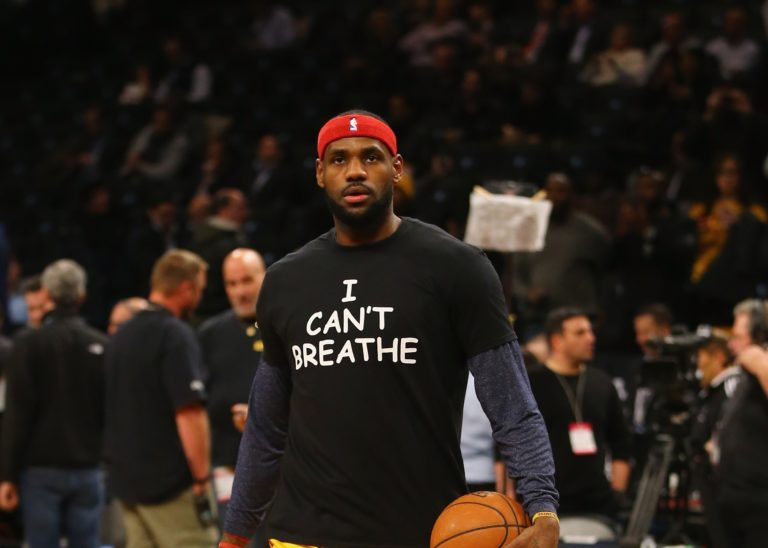

O esporte é uma ferramenta importante no combate à discriminação e, com ele, é possível a construção de uma sociedade mais justa.
O americano Tommie Smith venceu os 200 metros rasos, sendo o primeiro atleta a correr abaixo dos 20 segundos, e John Carlos ficou com o bronze na mesma prova. No pódio, ao invés de olharem para a bandeira e cantarem o hino, os atletas abaixaram a cabeça e ergueram o punho fechado, sinal do Movimento dos Panteras Negras, organização criada para combater a violência policial nos bairros negros. Mais de 40 anos depois, essa ainda é uma das imagens mais emblemáticas da história do esporte.

Aída dos Santos era negra, pobre, moradora da comunidade Morro do Arroz, em Niterói. Aída foi a única mulher na delegação brasileira e única do atletismo nos Jogos Olímpicos de Tóquio em 1964. É, portanto, uma pioneira. Sozinha, não tinha treinador, não tinha uniforme e nem material para competir. Apesar disso, a atleta se classificou para a final e terminou na quarta colocação do salto em altura, sendo a melhor colocação de uma mulher brasileira em uma prova individual da Olimpíada até o ouro de Maurren Maggi em 2008. Aída ainda disputou os Jogos de 1968, na Cidade do México, desta vez no pentatlo. É mãe de Valeskinha, que conquistou o ouro em Pequim-2008 com a seleção feminina de vôlei.

Considerado por muitos como o sucessor de Michael Jordan, LeBron é influente na liga de basquete desde a sua estreia em 2003. Dono de três anéis de campeão da NBA e dois ouros Olímpicos, James coleciona feitos dentro e fora das quadras. LeBron foi o primeiro negro, e terceiro homem na história, a ser capa da revista Vogue. O atleta possui uma fundação chamada LeBron James Family Foundation, sediada em Akron, Cleveland. Em 2015 firmou uma parceria com a Universidade de Akron para prover bolsas de estudos para até 2300 jovens a partir de 2021. Em 2018, a fundação, junto com a prefeitura de Akron criou a I Promise School, uma escola que além de ensinar, ajuda a combater a evasão escolar. De acordo com Lebron, a criação da escola foi a maior conquista de sua vida. O jogador já afirmou em diversas ocasiões que acredita ser necessário usar de seu status para se posicionar e atrair olhares para as causas raciais e humanitárias.
